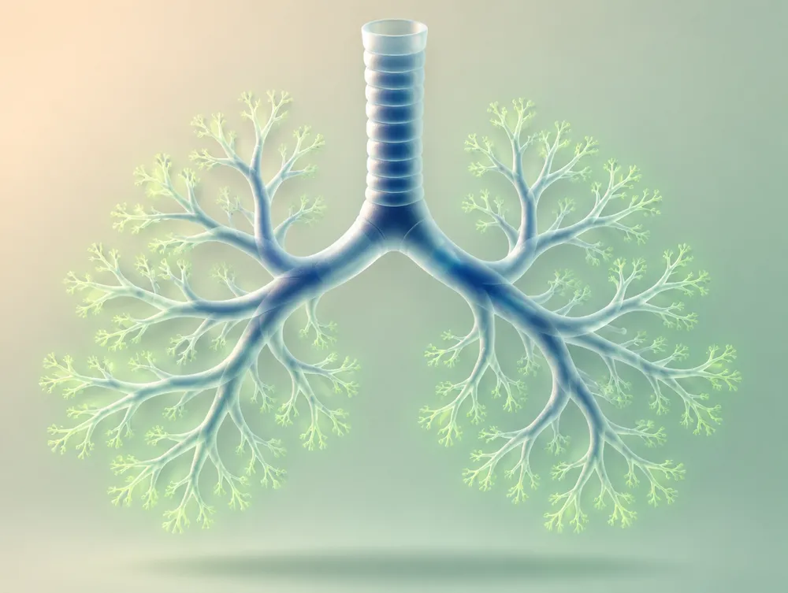
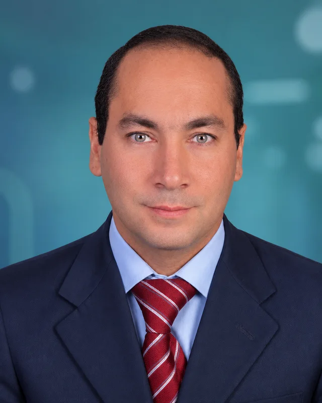
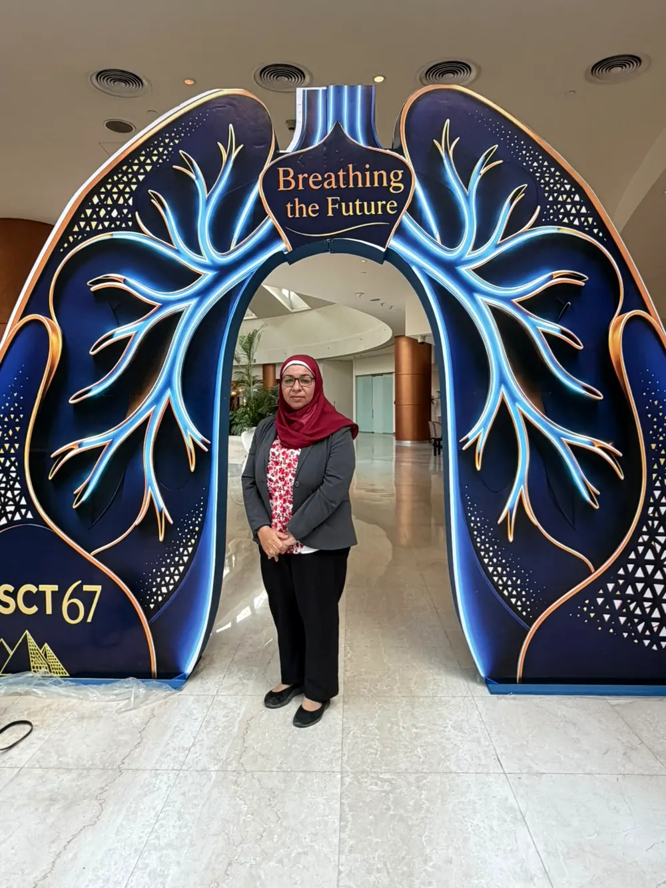
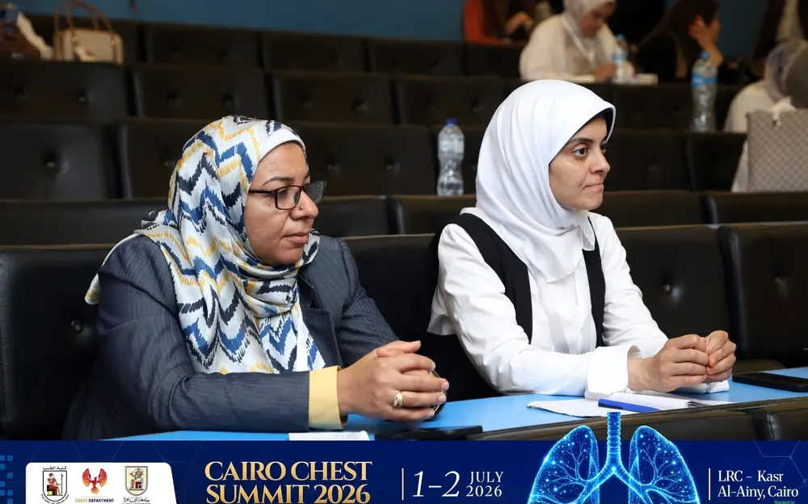
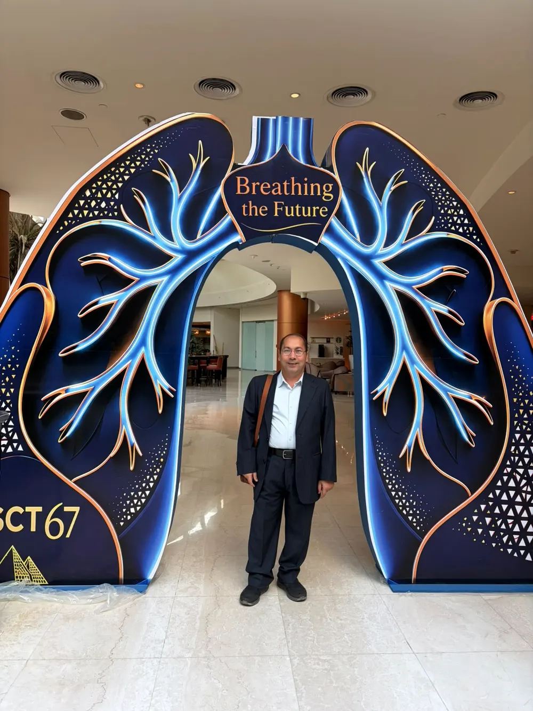
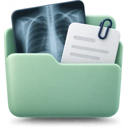

Chest consultations
Tell your doctor when your symptoms started and how they affect your day. Bring any previous chest reports so you can review them together.
Pulmonology · Fifth Settlement
A cough that keeps coming back, shortness of breath on your usual walk, or questions about a chest scan can bring you to a lung specialist. At Breathe Easy Clinic, you can discuss what you’ve noticed with a pulmonologist and understand the next step in your care.

About the clinic
Breathe Easy is a pulmonology clinic in the Fifth Settlement. Dr. Hedya Said Mohammed and Dr. Wael Abdel Fattah are faculty members at Ain Shams University’s Faculty of Medicine. Both see patients at THE CLINICS on South 90th Street.

Services
Tell your doctor when your symptoms started and how they affect your day. Bring any previous chest reports so you can review them together.
Discuss what has changed since your last visit, review your results, and ask questions about your care plan.

If you have been referred for a bronchoscopy, you can discuss the reason for the referral and your questions about the procedure with Dr. Hedya.
Start with the concern that brought you in. Perhaps a cough interrupts your sleep, or you now pause halfway up a staircase you usually climb comfortably. Give your doctor an example from a typical day and say when you first noticed the change.
If you are visiting because of a scan or report, point out the wording you would like explained. If you have earlier images or reports, bring them with their dates. You can ask how the findings relate to your symptoms and which questions still need an answer.
Ask your doctor to go over the next step in everyday language. If a test is suggested, ask what question it is intended to answer, where to arrange it, and how the result will be reviewed. Write down any follow-up date you agree on.

Start with what has happened since your last appointment. Has anything become easier, more difficult, or stayed the same? Bring any results your doctor asked to review. If you use an inhaler, bring it or a photo of its label so you can identify it accurately when discussing your routine.

You can book a consultation with Dr. Hedya Said Mohammed to discuss the referral. Bring the letter and any chest imaging mentioned in it. If a particular finding prompted the referral, ask Dr. Hedya to show you where it appears in the report and explain what your referring doctor wants to clarify.
Our doctors

Assistant Professor of Pulmonology · Consultant in Bronchoscopy
Assistant Professor of Pulmonology at the Faculty of Medicine, Ain Shams University. Dr. Hedya holds a doctorate in chest diseases and is a senior consultant in pulmonology and a consultant in bronchoscopy.

Assistant Professor and Consultant in Pulmonology
Assistant Professor and Consultant in Pulmonology at the Faculty of Medicine, Ain Shams University. Dr. Wael sees patients for chest consultations and follow-up visits.
All times are local to Cairo.
Plan your visit
Choose your visit type, your doctor and a session. We’ll show what to bring, then you call the clinic to confirm your appointment time.
To book, please call the clinic. 01128514549
Our doctors take part in pulmonology conferences and hands-on workshops in Egypt. In 2026 these included Cairo Chest Summit, the SRIC workshop on thoracic ultrasound in emergencies, Beyond the Scan, and the 67th ESCDT conference.






Appointments and directions


Choose the doctor and day that suit you. When you call, say whether this is your first visit, a follow-up, or a consultation about a bronchoscopy referral. Ask which appointment times are available on your preferred day.

If you have previous chest scans, bring the images as well as the written reports. A list of your current medicines and inhalers can also help your doctor understand what you have already tried. If another doctor referred you, bring the referral letter if you have it.
Describe the change you noticed first and when it began. For example, does breathlessness interrupt a walk you used to finish comfortably? Before you leave, ask what the next step is, which results to bring back, and when to arrange a follow-up.
Tick items as you get them ready. Your list is saved on this device only.
Yes. Mention this when booking and bring the relevant documents. For a bronchoscopy referral, request a consultation with Dr. Hedya to discuss why the procedure was suggested and what happens next.
Call the clinic with your name, your doctor’s name, and the date of your booking so you can ask about another available time.
Both Dr. Hedya and Dr. Wael see patients for chest consultations. If you have already seen one of them and are returning with results, give that doctor’s name when you call. For a bronchoscopy referral, ask for a consultation with Dr. Hedya.
Dr. Wael’s Monday and Tuesday sessions run from 6 to 8 pm. If you prefer Saturday, Dr. Hedya sees patients from 4 to 7 pm. Call to check which appointment times are still available within the session.
When you call on someone else’s behalf, have the patient’s name, the preferred doctor, and a suitable day ready. If the patient needs help getting to the third floor, ask about the building entrance, lift access, and the easiest drop-off point before setting out.
Tell the clinic whether you are booking a first consultation, returning with test results, or discussing a referral. Ask for the fee for that visit and which payment methods you can use. If you need a receipt for reimbursement, mention it when you book.
Have the name of your insurer and your plan ready. Ask the clinic whether it accepts that specific plan, then check with your insurer about referrals, prior approval, and any amount you would pay yourself.
When booking, ask which formats the doctor can review. If your images are accessed through a radiology centre’s link, check that the link opens before your visit. Keep the written report with the images so the doctor can tell which examination and date they belong to.
Contact and directions
For new appointments, follow-up bookings, or directions, call either clinic number. Please confirm the date and time of your appointment before travelling.
THE CLINICS, Clinic 311, third floor.
South 90th Street, Fifth Settlement, New Cairo, Egypt. The building is behind Mahmoud El Far Supermarket. Once inside THE CLINICS, go to the third floor and look for Clinic 311.
Get directions